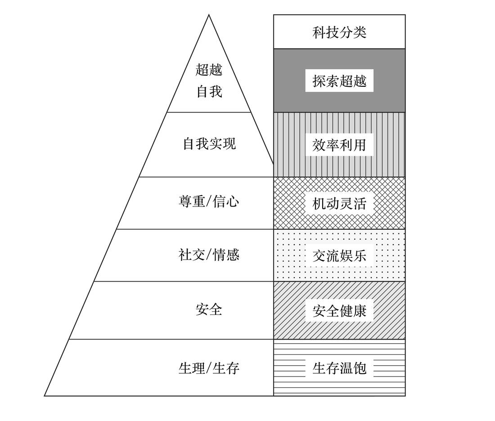
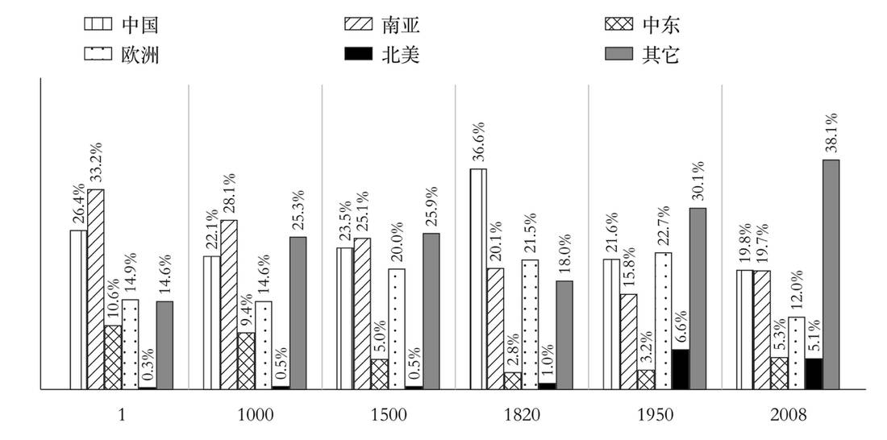

按人的需求为科技分类，六类价值如何涵盖全部科技成就？
为观察科技发展的长期结构，我们建立了“重大科技成就数据库”。本次使用的版本收录3170项条目，构建方法见附录。按时间、地域和需求分类，可以分别观察成果的积累、产生与传播，以及它们对生活的作用。
对科技知识进行分类，会改变我们看见的联系。按研究对象，可以把数学、天文学、物理学等知识分别汇集起来，便于追踪各自的概念、方法和问题；按用途，则可以围绕农耕、医疗或军事，把来自不同领域的知识组织在一起。同一项测量方法，可以属于一个学科的知识积累，也可以进入航海、建筑和土地管理。分类如同选择观察角度，使原本分散的史料显出某种结构。
本书希望理解科技怎样回应人的欲望、改变社会生活，因此在学科分类之外，采用需求分类。它把研究对象不同、技术形态不同，却服务于相近需要的成果放在一起。例如药物、手术和住宅结构可以共同进入安全与健康的讨论；车轮、船舶与空气动力学，则能够围绕扩大行动能力相互联系。由此既能观察科学与技术的共同价值，也能比较不同时期、不同地区把创造力投向了哪些生活问题。
从需求理论转向科技分类，还需要把心理愿望转化为可观察的活动与成果。本书保留生存、安全、交往和超越等线索，并结合科技史，把尊重与信心所包含的自主行动、掌握处境，展开为“机动与灵活”；把自我实现所包含的发挥能力、达成目标的效率，展开为“效率与利用”。六类名称由此确定（图I-2）。这一转换体现本书对科技价值的理解，也为全书叙述和数据库比较提供统一的观察框架。
生存与温饱：对应生理与生存需求，包括获取食物、衣物等基本生活资料的知识和技术，如狩猎、农耕、动植物驯化和纺织。它们支撑个人存活与人群延续。自然环境影响人们选择何种生活方式，相关创造又扩大食物供给和人口承载能力。求生愿望具有广泛共性，其实现办法则随地域和历史条件而异。
安全与健康：对应安全需求，包括医疗、药物、居住设施与武器等保护生命、减少疾病和外部威胁的知识与技术。个人希望免受疾病、风雨和暴力侵害，人口聚居又使防病、防御与建设成为共同事务。这类创新把个人的生命关切与社会组织紧密联系起来，也深刻影响寿命和人口规模。
交流与娱乐：沿着归属、社交与情感需求展开，包括文字、数字、玩具、影视、计算机和互联网等记录、计算、传播信息与丰富情感生活的知识和技术。它们帮助个人表达和交往，也支持文化传承、贸易、治理与社会协作。文字与计算由此既回应人与人的联系，又成为复杂社会持续运作的基础。
机动与灵活：把尊重与信心中的自主性、行动能力，落实到人和物的移动，包括车、船、飞机及相关科学。扩大行动范围，使人有更多选择，能够接近远方的资源、市场和伙伴，也增强掌握自身处境的能力。个人对自由行动的愿望，与商业、军事和社会管理的需要共同推动交通创新。这种对应帮助我们观察移动技术赋予人的能力。
效率与利用：沿着自我实现中发挥能力、达成目标的线索，包括材料、能源、机器及相关科学。它们使人更充分地利用资源，提高生产效率、降低成本，把原来难以实现的计划变为现实。个人追求财富和成就，企业扩大生产，社会改善生活，都能为这类创造提供动力。生产能力的提升，又为更多人追求教育、健康、娱乐和探索提供物质条件。
探索与超越：对应超越眼前功用、扩展认识的需要，包括对自然现象的研究，以及为研究制造的仪器。好奇心、求知欲和对更大世界的向往，使人愿意追问暂时没有实际用途的问题。这类活动丰富精神生活，改变人类理解世界的方法，也可能在很久以后为技术与产业打开新的道路。人的好奇本能与社会对探索的评价，共同影响它的发展。
六类之间存在密切联系。交通工具也可运送粮食、用于战争，效率提升可以服务于所有类别，探索产生的知识又可能进入新的实际用途。分类时考察每项成果最突出的价值，讨论历史时则追踪这些价值怎样交汇。图中的层次帮助组织问题，各类科技的出现与发展可以交错，也会因文化、制度和历史机遇而呈现不同顺序。
图I-2 马斯洛需求理论的分类线索与本书六类科技讨论的对应示意。各类之间可以交叉，图中层次用于组织分析。

需求模型帮助我们理解创新的动力，实际归类则需要能够核查的依据。一项成果的创造者可能怀着多种愿望，资助者与使用者也可能有不同目标，而多数古代成果缺乏完整的动机记录。因此，本数据库主要依据成果问世时所回应的需求与主要用途归类。这样便把心理层面的讨论转化为可操作的历史观察：考察成果使人能够做什么、解决什么问题，再判断它主要对应哪一类需要。各章讨论人物与事件时，再结合史料追索个人动机与社会驱动。
一项成果可能服务于多种需求，我们按当时最突出的用途确定主要类别；跨类且难以区分者，依数据库既有规则归入“效率与利用”。具体用途及其变化，则在各章中展开讨论。
用途会随时间变化。《墨经》记载的小孔成像，作为对光学现象的探索，归入“探索与超越”；后来围绕成像开发的摄影技术，则主要服务于信息记录和传播，归入“交流与娱乐”。同一知识进入新的组合，也会获得新的价值。
归类需要判断，也需要反复核对。参与者通过查阅史料、讨论成果价值和统一规则，逐步缩小分歧；接近一致时，仍有约3%的条目存在不同意见。统计时每项成果采用相同权重，使各地区和时段能够按一致口径比较。借助这套框架，我们可以观察创新重点的移动、各类成果的相互支撑，以及地域之间的结构差异；具体成果产生多大社会影响，则在历史叙述中进一步分析。
地域比较采用统一口径。数据库主要按中国、南亚、中东、欧洲和北美等区域统计，其余归入“其他”；跨境地区与历史疆域的处理规则见附录。图I-3展示相应区域在若干历史节点的人口比例，人口数据来源见图注。
图I-3 各区域人口在若干历史节点占世界人口的比例。

数据来源：Maddison 2010版历史统计数据库；区域按本书的比较范围合并。
本文选自《欲望的力量：人类科技创新简史》（第二版）开篇“欲望与创新”——科技六类价值：从需求看科技的六类价值。上一篇：需求创新动力学：人类需求与科技创新的动力；下一篇：万年科技前沿：科技前沿演进的万年趋势；连载总索引见《欲望的力量》连载总索引。
本编其他连载：需求创新动力学：人类需求与科技创新的动力 · 万年科技前沿：科技前沿演进的万年趋势 · 三次科技革命：人类的三次科技大革命 · 人口与科技创新：人口规模与科技创新